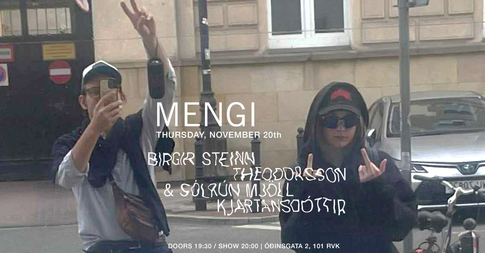
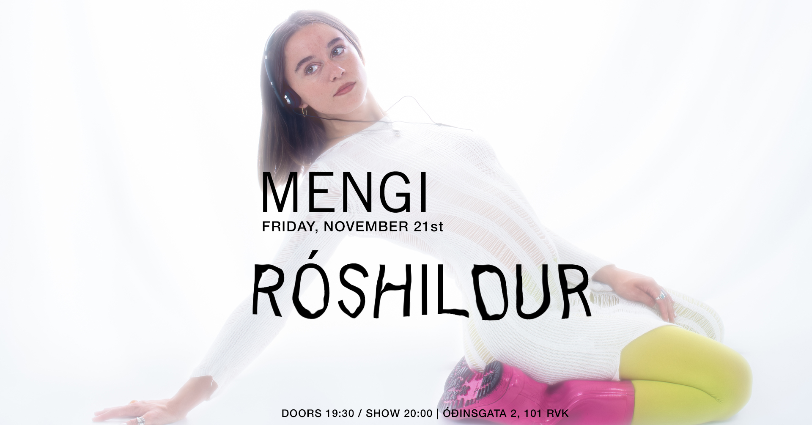
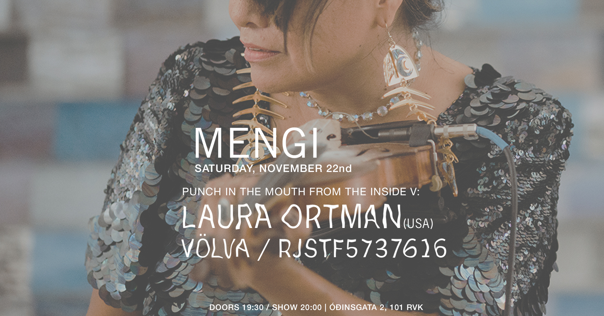
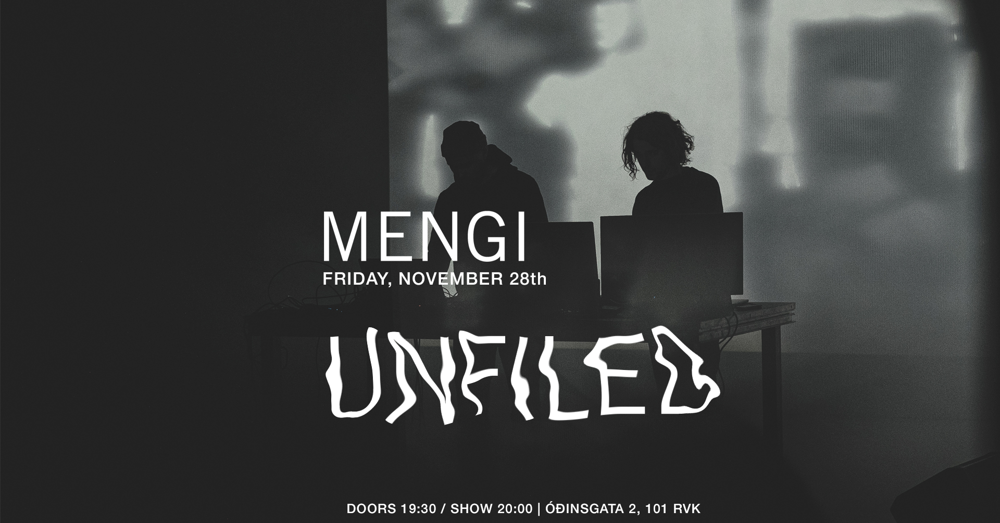
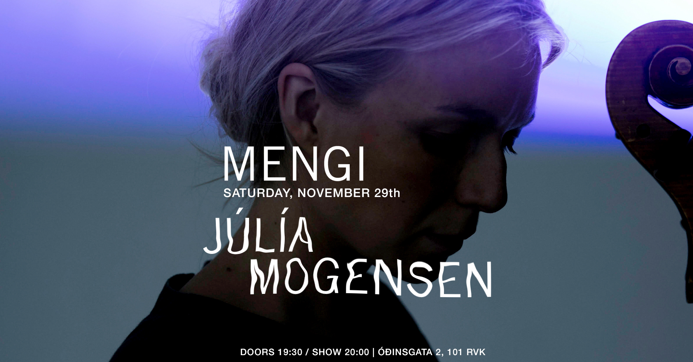

Upcoming Events
THU 20.11 Birgir Steinn Theodorsson & Sólrún Mjöll Kjartansdóttir
Tickets doors 19:30 / show 20:00 2500kr / 2000kr students / pay what u can Kontrabassaleikarinn Birgir Steinn Theodorsson og trommuleikarinn Sólrún Mjöll Kjartansdóttir hafa unnið saman við ýmis verkefni en loks fannst þeim tími til kominn að semja og flytja frumsamda tónlist eftir þau bæði. Hljóðheimur þeirra er tilraunakenndur þar sem samspil kontrabassa, trommusetts og ásláttarhljóðfæra er í forgrunni. Rytminn er teygður í allar áttir, andstæður, dulúðar laglínur og togstreita sem leysist upp í spuna. Á tónleikunum verður flutt tónlist af komandi plötu þeirra sem kemur út á næsta ári.
FRI 21.11 Róshildur
Tickets doors 19:30 / show 20:00 2500kr / 2000kr for students Fyrsta breiðskífa Róshildar er í bígerð og í Mengi ætlar hún að kveðja gamlar útsetningar og tilraunast með nýjar. Róshildur vefur saman hljóðfæraleik, marglaga raddútsetningum og hljóðgervlum. Til verður svífandi rafpopp fullt af nánd, djúpum hljóðheimi og íslenskum textum sem einkennast af einlægni og húmor í bland. Aldrei eru tveir tónleikar eins hjá tónlistarkonunni, en með lúppum, töktum úr umhverfishljóðum og hljóðfæraleik býður hún áhorfendum inn í sinn einstaka heim. Með útgáfu EP plötu sinnar árið 2023 kynnti Róshildur sig sem flytjandi og tón, takt og textasmið. // Róshildur is working on her first full length album and now she will use the intimate setting of Mengi to say goodbye to some old arrangements and experiment with new ones. Róshildur is the musical alias of the Icelandic/Danish performance artist Anna Róshildur. Loops, samples and a heavy bass, weaved together with layered vocal harmonies and a beat made from the sound of a squeaky chair. This is the soundscape that carries Róshildur’s melancholic but often humorous lyrics, sung in Icelandic. Her live sets are ever changing, looping her own voice, synths and saxophone, experimenting with ways to convey her thoughts. Róshildur’s alternative pop is a blend of melodic, stacked vocals and textured production. With her debut EP, titled (V2,2), she showcases herself as a songwriter, producer and performer.
SAT 22.11 PUNCH IN THE MOUTH FROM THE INSIDE V: Laura Ortman / Völva / rjstf5737616
Tickets doors 19:30 / show 20:00 2500kr / 2000kr for students / pay what u can LAURA ORTMAN (USA) A member of the White Mountain Apache tribe, Laura Ortman is a musician and composer who creates across multiple platforms, including albums, live performance, field recordings, and video works. As a soloist, Ortman performs on amplified and Apache violin, vocals, piano, electric guitar, and keyboard. Ortman’s My Soul Remainer (2017)—which exists as a freestanding composition, solo album, and a video collaboration with director Nanobah Becker—combines elegiac violin melodies, orchestral samples, and the urgent pandemonium of amplified violin. In the video work, Ortman performs each of these musical voices within landscapes of the desert Southwest, plucking and stroking her violin by a rocky stream, in a forest clearing, or against distant mountains. The video iteration of My Soul Remainer was included in the Whitney Biennial, New York, NY (2019), at which Ortman also presented a performance celebrating the summer solstice. In 2008, Ortman founded the Coast Orchestra, an all-indigenous orchestral ensemble. She has also collaborated with artists such as Tony Conrad, Jock Soto, Raven Chacon, Okkyung Lee, and Jeffrey Gibson. She has performed and presented work nationally and internationally at The Museum of Modern Art, New York, NY (2021); the Whitney Museum of American Art, New York, NY (2019); the imagineNATIVE Film and Media Arts Festival, Toronto, Canada (2017, 2011); Musée d’Art Contemporain de Montréal, Montréal, Canada (2017); and the Centre Pompidou, Paris, France (2009). VÖLVA VölVa is the solo project of musician Fíóna Rokk Steinunnardóttir where she explores all the unconventional ideas that live in her head. Unbound by genre VölVa tries more to capture an energy or spirit like the Norse seeresses of old. In an age of oversaturation and sameness, VölVa offers something rare: a voice that is unapologetically her own, shaped by myth, mischief, and a sense of self sufficiency in her creative purpose rooted deeply in the DIY ethos rjstf5737616 rjstf57376167374737818294959271616648492927673829924772626515395059716275802947161646596936589274515205726151859572729596736251950000000000000000000
FRI 28.11 Unfiled
Tickets doors 19:30 / show 20:00 2500kr / 2000kr for students / pay what u can Unfiled is the two-headed beast of Atli Bollason and Guðmundur Úlfarsson. They began working together in 2019 with a series of experimental A/V nights in Mengi. Their practice still revolves around certain key concepts established in those early days: feedback systems, the mechanics of signification, visual improvisation, memories, ghosts, noise. For Unfiled, music and visuals are not simply complimentary but inseparable. Their self-titled debut album (released in May 2025) was made in the post-industrial city of Łódź, Poland and drew comparisons with Emptyset, Ben Frost and Franck Vigroux. It is spacious and eerie yet often overpowered by deafening noise and chugging, metallic rhythms that evoke steam-powered looms and spinning machines. For their upcoming show in November, they’re eager to try out some brand new in-progress material for the first time. unfiled.bandcamp.com
SAT 29.11 Júlía Mogensen
Tickets
Saturday, November 29th
JÚLÍA MOGENSEN feat.
ÞÓRANNA DÖGG BJÖRNSDÓTTIR
JAN HENDRICKSE
doors 19:30 / show 20:00
2500kr / 2000kr
In collaboration with Þóranna Dögg Björnsdóttir:
Following their earlier collaboration Vitundin er spírall from Júlía’s upcoming album, where Þóranna composed for the halldórófón, Júlía and Þóranna now come together again to explore for the first time the dialogue between the halldórófón and Stacco, a new magnetic and AI-driven instrument created by Nicola Privato.
In collaboration with Jan Hendrickse:
Their first collaboration, a piece Jan composed for the halldórófón on Júlía’s forthcoming album for halldórófón and acoustic spaces, marked the beginning of their work together. Now performing together, Júlía and Jan continue this exploration through the halldórófón and Jan’s feedback and acoustic flutes.
Júlía Mogensen:
Júlía is a classically trained cellist, a keen interpreter of new and experimental music with an interest in the complex relationship between performer, instrument, and composition. She has collaborated and improvised with a broad range of artists—on stage, in recordings, across film, video, and sound art—both as a performer and composer. She was a member of the Iceland Symphony Orchestra from 2013 to 2019, and continues to appear regularly as a guest performer.
In recent years Júlía has been in creative collaboration with Halldór Úlfarsson, inventor of the halldorophone—a pioneering electroacoustic feedback instrument where she has been exploring the instrument’s unique possibilities through performances and commissioned works. She has just completed recording her first solo album, a four-piece project, in which four composers create original works for halldorophone and a chosen acoustic space, set to be released early 2026.

SAT 13.12 SPACESTATION Jólacoustic tónleikar + Iðunn Einars
Tickets Saturday, December 13th SPACESTATION JÓLATÓNLEIKAR / IÐUNN EINARS doors 19:30 / show 20:00 2.990kr Strákarnir í hljómsveitinni Spacestation hafa farið svaðilför um Íslenska tónlistarsenu seinustu misseri og hafa fest sig í sessi sem eitt öflugasta rokkband hér á landi um þessar mundir. Sveitin gaf út plötuna “Reykjavík Syndrome” fyrr á árinu sem hlaut lof gagnrýnenda og miklar vinsældir. Spacestation hefur einnig verið að gera mjög góða hluti erlendis en seinastliðna mánuði hafa þeir verið á tónleikaferðalagi um Evrópu og spilað í 14 borgum og fengið mjög góðar móttökur. Að loknum túrnum tekur við löngu verðskuldað jólafrí og friður og ró og ætla strákarnir að halda uppá það með þægilegum og kosy jólatónleikum í Mengi þann 13. desember næstkomandi. Seinustu tónleikarnir sem bandið spilar þetta árið! Spacestation spilar indí rokkað post-punk með shoegaze’uðu 60’s rokk ívafi. En lætin fá að víkja í þetta sinn og verður kvöldið með öllu rólegra móti þar sem þetta verða svokallaðir “acoustic” tónleikar, þeir fyrstu sinnar tegundar sem bandið flytur. Ekkert pedala stapp eða feedback suð heldur bara ljúfir strengjaslættir og kertaljós, tími til kominn eftir allann hamagang ársins. Hver veit nema nokkur jólalög komi við sögu? Og jafnvel jólagestur??